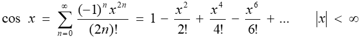

<!DOCTYPE html>
<html lang="en">
  <head>
    <meta charset="UTF-8" />
    <meta name="viewport" content="width=device-width, initial-scale=1.0" />
    <title> Кобельчук А.И.</title>
   <style>
    .style1 {
        margin-left: 38%; 
        margin-right: 38%;      
        display: block;   
        padding: 0.8%;
        line-height: 60%;   
    }      
  </style>
  </head>
  <body>
    <script>
        "use strict";
        let x = prompt("Введите x:");
        let accuracy = prompt("Введите точность вычисления фунцкии:");
        document.write('<div class="style1">');
        document.write('<p>');
        document.write("Значаение функции : " + Math.cos(x) + "<p>");    
        document.write("Значение функции с помощью разложения: <p>" + teylor(x, 1, 1) + "<p>");
            
        function teylor(x,n,an){
            let an1 = (-1)*an*x*x/(2*n*(2*n-1));        
            if (Math.abs(an1) < accuracy) 
                return an + an1;        
            else{ 
                return an + teylor(x,n+1,an1);
            }  
            //return teylor(x,1,1);
        }
        
  </script>
  </body>
</html>
